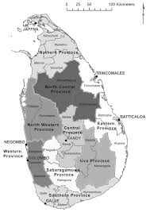
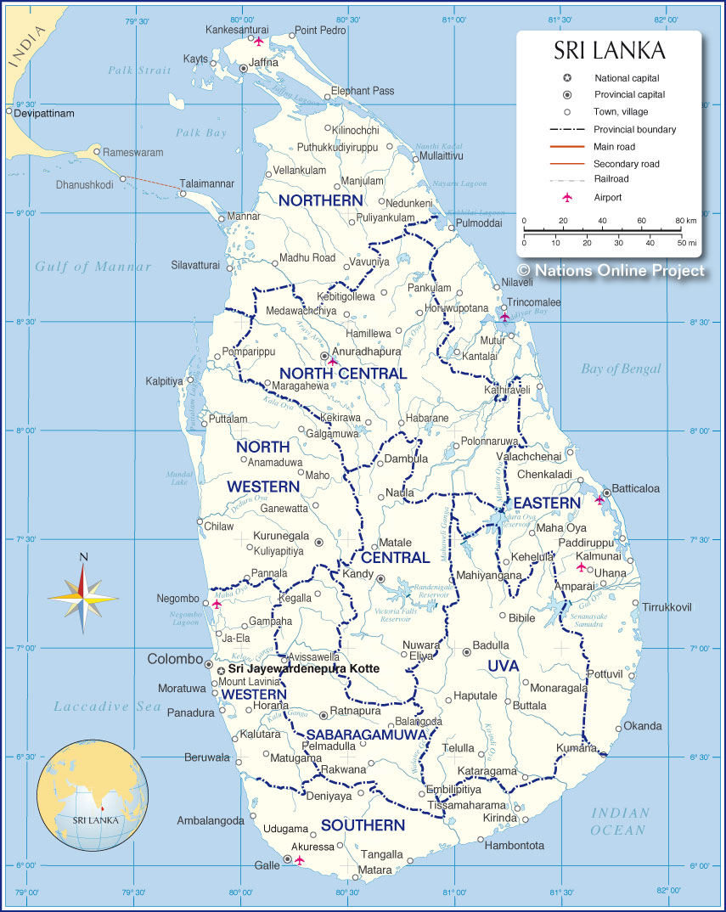

A map that contains graphically recorded information pertaining to administrative matters, such as supply and evacuation installations, personnel installations, medical facilities, collecting points for stragglers and enemy prisoners of war, train bivouacs, service and maintenance areas, main supply roads, traffic circulation, boundaries, and other details necessary to show the administrative situation. See also map.
Historical Map
Posted on 11 sep 2018 | Comments

Historical Maps of Sri Lanka
Posted on 29 aug 2016 | Comments
